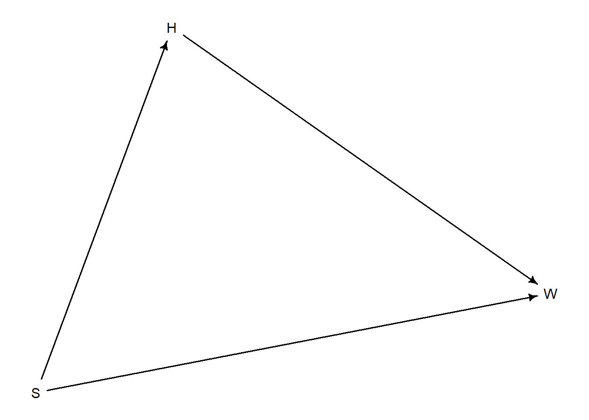

Rose: “Unobserved causes are ignorable unless they are shared”
Thorn:
Drawing Inferences
linear model can accomodate anything, thus we need to think carefully about our scientific model
generative model + multiple estimands = multiple estimators
quite often the estimate we want is not in a summary table because it depends on multiple unknowns in the posterior distribution or making assumptions about the population, so we often need to do post-processing
Categories
categories are discrete and non-linear
discrete, unordered types
we want to stratify by category, to fit a separate line for each
Howell Data
Loading required package: cmdstanr
This is cmdstanr version 0.6.1
- CmdStanR documentation and vignettes: mc-stan.org/cmdstanr
A newer version of CmdStan is available. See ?install_cmdstan() to install it.
To disable this check set option or environment variable CMDSTANR_NO_VER_CHECK=TRUE.
Loading required package: posterior
Warning: package 'posterior' was built under R version 4.3.1
This is posterior version 1.4.1
Attaching package: 'posterior'
The following objects are masked from 'package:stats':
mad, sd, var
The following objects are masked from 'package:base':
%in%, match
Loading required package: parallel
rethinking (Version 2.40)
Attaching package: 'rethinking'
The following object is masked from 'package:stats':
rstudent
Warning: package 'dagitty' was built under R version 4.3.2
how are height, weight, and sex causally related?
how are height, weight, and sex statistically related?
d <-dagitty("dag { H -> W S -> W S -> H }")drawdag(d)

height influences weight
sex influences weight and height
weight is influenced by height and sex
influence of sex is both direct and indirect on weight
\(H = f_{H}(S)\)
\(W = f_{W}(H,S)\)
Unobserved causes are ignorable unless they are shared between variables (common cause) = confound
sim_HW <-function(S, b, a){ N <-length(S) H <-ifelse(S==1, 150, 160) +rnorm(N, 0, 5) W <- a[S] + b[S]*H +rnorm(N, 0, 5)data.frame(S, H, W)}# S = 1 female : S = 2 maleS <-rbern(100)+1dat <-sim_HW(S, b=c(0.5, 0.6), a=c(0,0))head(dat)
S H W
1 1 146.9673 72.66716
2 1 156.2478 85.91130
3 1 147.0498 78.54088
4 1 153.9650 86.77788
5 2 161.9531 101.04999
6 2 164.5353 98.76580
If you use indicator variables, one becomes the default and the other is the adjustment so you must set separate priors for both
Total Causal Effect of Sex on Weight
S <-rep(1, 100)simF <-sim_HW(S, b=c(0.5, 0.6), a=c(0,0))S <-rep(2, 100)simM <-sim_HW(S, b=c(0.5, 0.6), a=c(0,0))# effect of sex (male-female)mean(simM$W - simF$W)
[1] 21.5056
estimating model and synthetic example
S <-rbern(100)+1dat <-sim_HW(S, b =c(0.5,0.6), a =c(0,0))m_SW <-quap(alist( W ~dnorm(mu, sigma), mu <- a[S], a[S] ~dnorm(60, 10), sigma ~dunif(0, 10)), data = dat)precis(m_SW, depth =2)
“controlling” for the indirect effect of sex through height
want to “block” association through H
S <-rbern(100)+1# slopes are the same so there is no effect of height on weight through slope but men are on average 10 kg heavier (intercept 10)set.seed(12)dat <-sim_HW(S, b =c(0.5, 0.5), a =c(0, 10))
d <- Howell1d <- d[d$age >=18, ]dat <-list(W = d$weight, H = d$height, Hbar =mean(d$height), S = d$male +1)m_SHW <-quap(alist( W ~dnorm(mu, sigma), mu <- a[S] + b[S]*(H-Hbar), a[S] ~dnorm(60, 10), b[S] ~dunif(0, 1), sigma ~dunif(0, 10)), data = dat)
we need to compute the difference of expected weight at each height to get the actual estimate that we are looking for (for the direct effect of sex on weight)
compute posterior predictive for each group, calculate contrast, plot